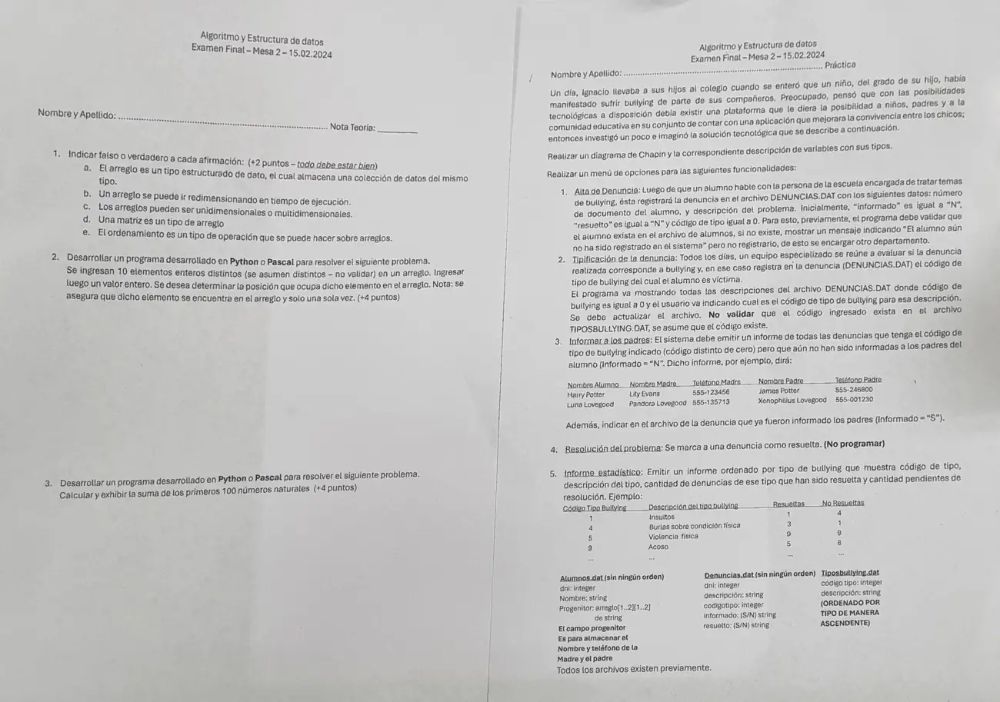

Final, 15/02/2024 (Bullying)
3° parcial y final, 15/02/2024
Enunciado


Preguntas con opciones
Salen de este examen, adaptadas. Dejalas para el final, porque las opciones pueden dar pistas.
- 1
¿Se puede redimensionar un arreglo durante la ejecución del programa?
Se tomó: Final 15/02/2024, adaptada
El arreglo es estático. La cantidad de elementos se fija en la declaración.
Propuesta de respuesta
Respuesta no verificada. La propuso Luta Studios con inteligencia artificial y ningún docente la revisó. Puede tener errores.
La hoja pide el diagrama de Chapin. Va un diagrama por módulo, con su declaración de variables arriba, y primero el del programa principal. Si un diagrama no entra en la pantalla, tocalo para verlo completo. Después de los diagramas está el mismo algoritmo en Python, para que lo puedas probar. Las sentencias de archivos van con las palabras reservadas de Python (open, pickle.load, pickle.dump, seek, tell). Los textos se completan con ljust para que los registros midan lo mismo. El tamaño de un registro sale de tell() después de leer el primero.
Menú iterativo (la opción 4 solo se invoca)
1. Alta de denuncia
2. Tipificación de la denuncia
3. Informar a los padres
5. Informe estadístico
El mismo algoritmo en Python
Es el programa que se probó, con las mismas sentencias y en el mismo orden que las cajas. Cada Leer del diagrama es un input, convertido a int o float según la declaración, y cada Mostrar es un print.
import os
import pickle
class Alumno:
def __init__(self):
self.dni = 0
self.nombre = ""
self.progenitor = [[""]*2 for n in range(2)] # fila 0 madre, fila 1 padre; columna 0 nombre, 1 teléfono
class Denuncia:
def __init__(self):
self.dni = 0
self.descripcion = ""
self.codigotipo = 0
self.informado = "N"
self.resuelto = "N"
class Tipo:
def __init__(self):
self.codigo = 0
self.descripcion = ""
# afAlumnos, afDenuncias, afTipos: str
# alAlumnos, alDenuncias, alTipos: archivo
afAlumnos = "ALUMNOS.DAT"
afDenuncias = "DENUNCIAS.DAT"
afTipos = "TIPOSBULLYING.DAT"
alAlumnos = open(afAlumnos, "rb")
alDenuncias = open(afDenuncias, "r+b")
alTipos = open(afTipos, "rb")
def BUSCA_ALUMNO(dni):
# Secuencial: ALUMNOS.DAT no tiene orden. Devuelve el byte donde empieza o -1
# dni, tam, pos, p: int
# reg: Alumno
tam = os.path.getsize(afAlumnos)
pos = -1
alAlumnos.seek(0, 0)
while alAlumnos.tell() < tam and pos == -1:
p = alAlumnos.tell()
reg = pickle.load(alAlumnos)
if reg.dni == dni:
pos = p
return pos
def ALTA_DENUNCIA():
# reg: Denuncia
reg = Denuncia()
reg.dni = int(input("DNI del alumno: "))
if BUSCA_ALUMNO(reg.dni) == -1:
print("El alumno aún no ha sido registrado en el sistema")
else:
reg.descripcion = input("Descripción del problema: ").ljust(100, " ")
reg.codigotipo = 0
reg.informado = "N"
reg.resuelto = "N"
alDenuncias.seek(0, 2)
pickle.dump(reg, alDenuncias)
alDenuncias.flush()
def TIPIFICACION():
# tam, pos: int
# reg: Denuncia
tam = os.path.getsize(afDenuncias)
alDenuncias.seek(0, 0)
while alDenuncias.tell() < tam:
pos = alDenuncias.tell()
reg = pickle.load(alDenuncias)
if reg.codigotipo == 0:
print(reg.descripcion)
reg.codigotipo = int(input("Código de tipo de bullying (0 si no corresponde): "))
alDenuncias.seek(pos, 0)
pickle.dump(reg, alDenuncias)
alDenuncias.flush()
def INFORMAR_PADRES():
# tam, pos: int
# reg: Denuncia
# alu: Alumno
print("Nombre alumno / Nombre madre / Teléfono madre / Nombre padre / Teléfono padre")
tam = os.path.getsize(afDenuncias)
alDenuncias.seek(0, 0)
while alDenuncias.tell() < tam:
pos = alDenuncias.tell()
reg = pickle.load(alDenuncias)
if reg.codigotipo != 0 and reg.informado == "N":
alAlumnos.seek(BUSCA_ALUMNO(reg.dni), 0)
alu = pickle.load(alAlumnos)
print(alu.nombre, alu.progenitor[0][0], alu.progenitor[0][1], alu.progenitor[1][0], alu.progenitor[1][1])
reg.informado = "S"
alDenuncias.seek(pos, 0)
pickle.dump(reg, alDenuncias)
alDenuncias.flush()
def ESTADISTICO():
# tamT, tamD, resueltas, pendientes: int
# tipo: Tipo
# reg: Denuncia
print("Código / Descripción / Resueltas / No resueltas")
tamT = os.path.getsize(afTipos)
tamD = os.path.getsize(afDenuncias)
alTipos.seek(0, 0)
while alTipos.tell() < tamT:
tipo = pickle.load(alTipos)
resueltas = 0
pendientes = 0
alDenuncias.seek(0, 0)
while alDenuncias.tell() < tamD:
reg = pickle.load(alDenuncias)
if reg.codigotipo == tipo.codigo:
if reg.resuelto == "S":
resueltas = resueltas + 1
else:
pendientes = pendientes + 1
print(tipo.codigo, tipo.descripcion, resueltas, pendientes)
# Programa principal
# opcion: int
opcion = 0
while opcion != 6:
print("1. Alta de denuncia")
print("2. Tipificación de la denuncia")
print("3. Informar a los padres")
print("4. Resolución del problema")
print("5. Informe estadístico")
print("6. Salir")
opcion = int(input("Opción: "))
while opcion < 1 or opcion > 6:
opcion = int(input("Opción inválida: "))
match opcion:
case 1:
ALTA_DENUNCIA()
case 2:
TIPIFICACION()
case 3:
INFORMAR_PADRES()
case 4:
RESOLUCION()
case 5:
ESTADISTICO()
alAlumnos.close()
alDenuncias.close()
alTipos.close()Teoría 1
| Afirmación | Respuesta | De dónde sale |
|---|---|---|
| a. El arreglo es un tipo estructurado que almacena datos del mismo tipo | Verdadero | Definición de arreglo, página del 2° parcial |
| b. Un arreglo se puede ir redimensionando en tiempo de ejecución | Falso | Autotest 2, pregunta 14 |
| c. Los arreglos pueden ser unidimensionales o multidimensionales | Verdadero | Declaración de arreglos, página del 2° parcial |
| d. Una matriz es un tipo de arreglo | Verdadero | Arreglos bidimensionales (matrices), página del 2° parcial |
| e. El ordenamiento es un tipo de operación que se puede hacer sobre arreglos | Verdadero | Ordenamiento, página del 2° parcial |
Teoría 2
La hoja pide un programa en Python o Pascal para la teoría 2 y la 3, así que van en Python, sin Chapin. Como el valor está seguro y una sola vez, alcanza con avanzar mientras no coincida.
# V: arreglo [0..9] de int
# x, i: int
V = [0]*10
for i in range(10):
V[i] = int(input("Elemento: "))
x = int(input("Valor a buscar: "))
i = 0
while V[i] != x:
i = i + 1
print("Está en la posición", i)Teoría 3
# suma, i: int
suma = 0
for i in range(1, 101):
suma = suma + i
print("La suma es", suma)Muestra 5050.
Respuesta no verificada. Puede tener errores.
Se armó con la hoja del examen y la página del 3° parcial y final (registros como clase, recorrer, búsquedas, actualizar un registro y alta). Las operaciones de archivos siguen las diapositivas de merge y corte de control. El Chapin sigue la forma de las diapositivas del examen de Historia Clínica de 2019. La teoría 1 sale de la página del 2° parcial y del Autotest 2.
Quedó en duda: La opción 4 solo se invoca, como dice la hoja. Se sumó la opción 6 para salir, porque el menú es iterativo. Informado y resuelto empiezan los dos en N, y pickle guarda una sola vez dos textos iguales de una letra. Al pasar informado a S el registro crece 2 bytes y puede pisar el siguiente. El material solo muestra ljust para textos. En las pruebas la lectura siguió andando, pero el archivo queda con registros de distinto tamaño. El informe estadístico recorre TIPOSBULLYING.DAT, que ya está ordenado por código, y por cada tipo cuenta en DENUNCIAS.DAT. Así sale ordenado sin ordenar nada. Si al tipificar se deja 0, la denuncia sigue sin tipo. En la teoría 1 solo la b tiene respuesta de la cátedra. Las otras salen de la definición de arreglo de la página. En la teoría 2 la posición se muestra desde 0. Si tu comisión numera desde 1, mostrá i + 1. Las diapositivas de la materia no muestran en Chapin la lectura de datos ni la selección múltiple. Acá van como Leer y como Según, con una columna por caso.
¿Cómo te fue?
Marcá cada tema del examen. Las preguntas con opciones ya se corrigieron solas.
- ArchivosSecuencial y de acceso directo, en 3° parcial y final
- ArreglosArreglos, en 2° parcial
- TeoríaLa parte de teoría, en 3° parcial y final